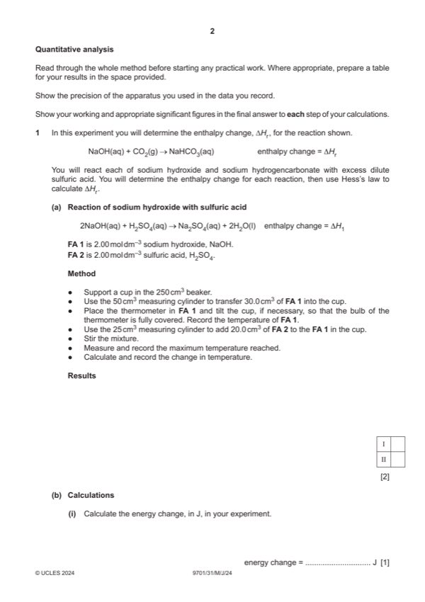
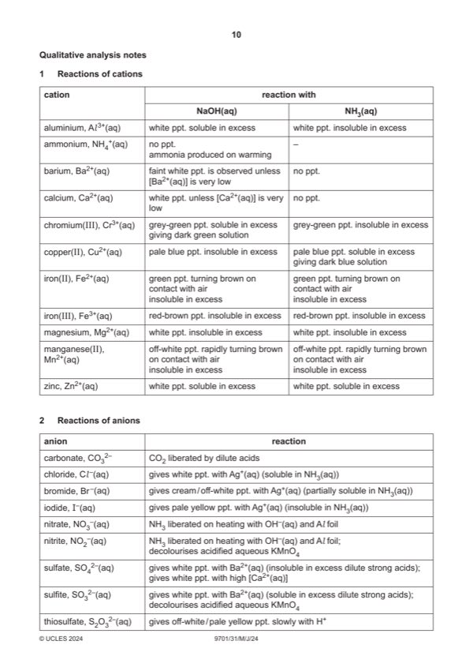

Question 1

Original paper page 2

Original paper page 10
Part 1(a) — solution
- Two thermometer readings recorded AND temperature rise correctly calculated, all listed in the space provided,
- ‘Correct’ headings are not required for this mark, but it must be clear what the three figures refer to
- Ignore precision of readings (but see II of 1(c)(i))
- Do not award if either thermometer reading is below 10 °C
- Temperature units: / °C OR in °C OR (°C) OR °C by every reading
Mark points
- Two thermometer readings recorded AND temperature rise correctly calculated, all listed in the space provided,
- ‘Correct’ headings are not required for this mark, but it must be clear what the three figures refer to
- Ignore precision of readings (but see II of 1(c)(i))
- Do not award if either thermometer reading is below 10 °C
- Temperature units: / °C OR in °C OR (°C) OR °C by every reading
Part 1(b)(i) — solution
- energy = 50 4.18 temp rise (J) AND answer given to 2–4 significant figures
Mark points
- energy = 50 4.18 temp rise (J) AND answer given to 2–4 significant figures
Part 1(b)(ii) — solution
- amount H2SO4 used = (0.030 2 0.5) = 0.03(000) (mol) 1
Mark points
- amount H2SO4 used = (0.030 2 0.5) = 0.03(000) (mol) 1
Part 1(b)(iii) — solution
Answer: AND
- H1 = /1000 (b)(ii)
Mark points
- H1 = /1000 (b)(ii)
Part 1(c) — solution
- (mass of) container + FA 3 / solid / NaHCO3
- (mass of) container (empty or with residual FA 3)
- (mass of) FA 3 / solid / NaHCO3 OR mass used
- initial temperature / thermometer reading
- lowest / minimum / final temperature / thermometer reading
- temperature change/decrease
- all four balance / thermometer readings shown
- all four thermometer readings [including those in 1(a)] to .0 or .5
- both masses to 2 decimal places OR both masses to 3 decimal places
- mass of solid correct AND between 5.00–7.00 g
- temperature fall correct AND between 8.0–12.0 °C
Mark points
- (mass of) container + FA 3 / solid / NaHCO3
- (mass of) container (empty or with residual FA 3)
- (mass of) FA 3 / solid / NaHCO3 OR mass used
- initial temperature / thermometer reading
- lowest / minimum / final temperature / thermometer reading
- temperature change/decrease
- all four balance / thermometer readings shown
- all four thermometer readings [including those in 1(a)] to .0 or .5
- both masses to 2 decimal places OR both masses to 3 decimal places
- mass of solid correct AND between 5.00–7.00 g
- temperature fall correct AND between 8.0–12.0 °C
Part 1(d) — solution
Answer: AND answer has positive sign AND expressed to two or more significant figures
- [M1] and M2 need not be evaluated to score
- [M1] energy = 25 4.18 temp decrease
- [M2] amount of H2SO4 used = 0.5 mass NaHCO3 used/84 (mol)
- [M3] enthalpy change = energy / amount of H2SO4 used 1000
Mark points
- [M1] and M2 need not be evaluated to score
- [M1] energy = 25 4.18 temp decrease
- [M2] amount of H2SO4 used = 0.5 mass NaHCO3 used/84 (mol)
- [M3] enthalpy change = energy / amount of H2SO4 used 1000
Part 1(e) — solution
- Hr = 0.5 H1 – 0.5 H2 + H3 1
Mark points
- Hr = 0.5 H1 – 0.5 H2 + H3 1
Part 1(f) — solution
(student is not correct) because acid is used in excess (in candidate’s experiment (c)) (so temperature fall is unchanged) 1
University Press & Assessment 2024 Page 7 of 11
9701/31 Cambridge International AS & A Level – Mark Scheme May/June 2024
Mark points
- Include the ideas shown in the solution above.